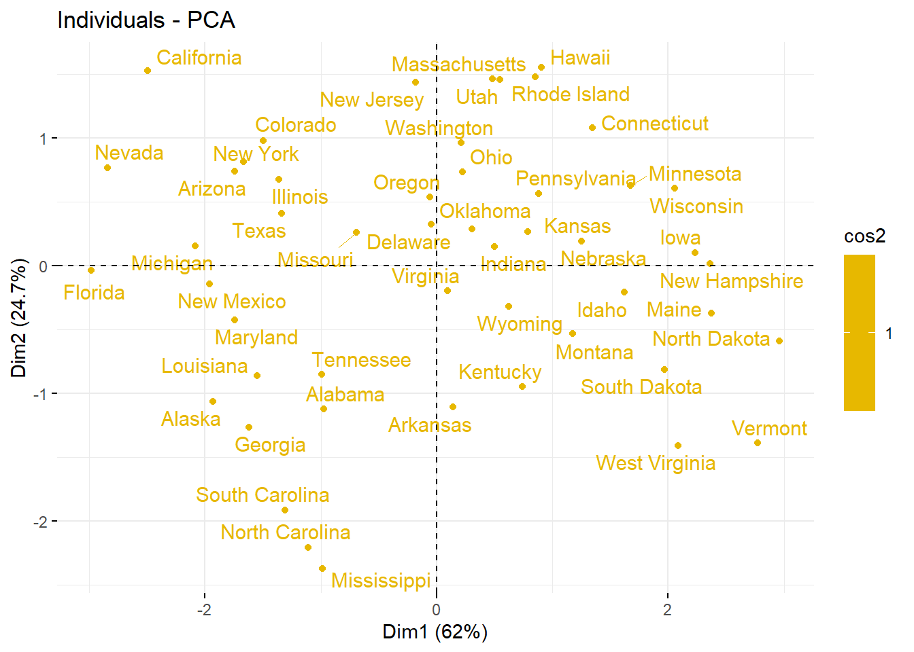
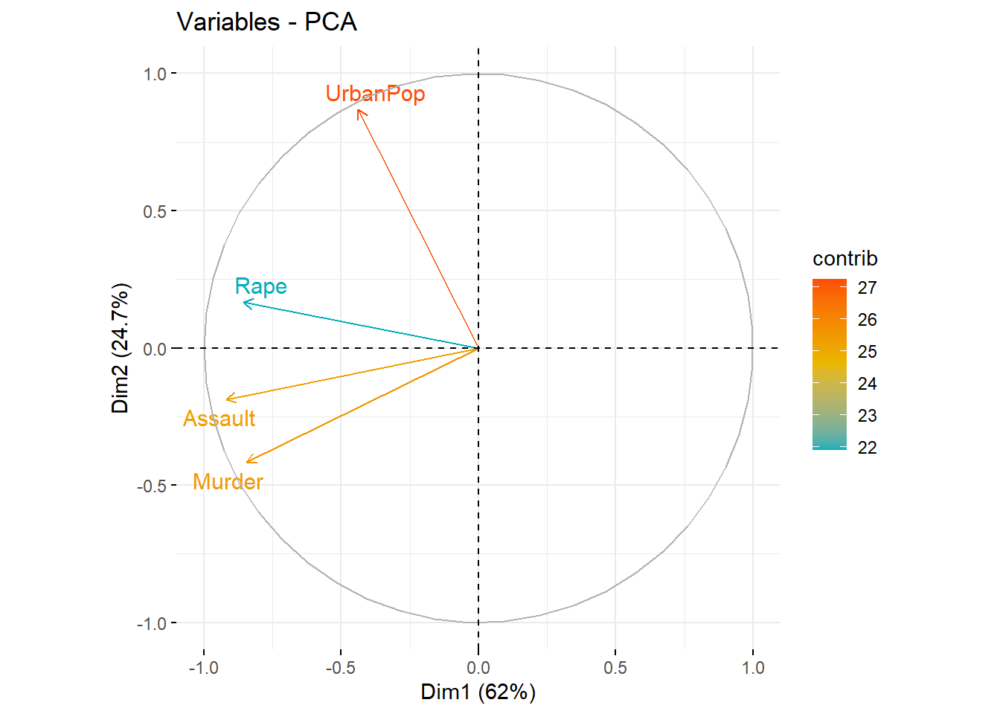
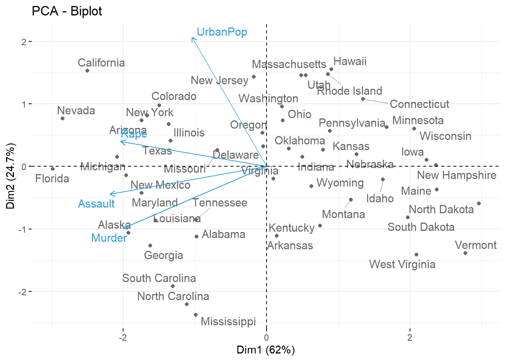

3 Principal Component Analysis (PCA)
3.1 What is PCA?
Principal component analysis (PCA) is a technique that transforms high-dimensions data into lower-dimensions while retaining as much information as possible. PCA was invented in 1909 by Karl Pearson, as an analogue of the principal axis theorem in mechanics; it was later independently developed and named by Harold Hotelling in the 1930s.(Johnson and Wichern 2014)
Drawing meaningful inferences from high-dimensional data can be challenging, as humans naturally excel at visualizing and comprehending information in two dimensions. PCA, a powerful technique, aids in transforming multi-dimensional data into a more manageable form by reducing its dimensionality. This simplification facilitates easier visualization and analysis, ultimately enhancing our ability to extract valuable insights from complex datasets.
PCA is a valuable tool in social science and agricultural research. It works by transforming multi-dimensional data into a lower-dimensional space while retaining as much variance in the data as possible. In essence, PCA identifies the most significant dimensions or “principal components” of the data, effectively reducing its complexity. The idea of PCA is simple — reduce the number of variables of a data set, while preserving as much information as possible.
3.2 When to Use PCA
Dimensionality Reduction: Use PCA when you have a high-dimensional dataset with many features (variables) and you want to reduce its dimensionality. This can help in cases where you have too many variables to work with efficiently.
Data Visualization: PCA is effective when you need to visualize high-dimensional data. By projecting data onto a lower-dimensional space, you can create scatter plots, heatmaps, or other visualizations that are easier to interpret.
Minimum data set: Principal components can be used to eliminate some data sets and identify a minimum data set for further experimentation.
Noise Reduction: If your dataset contains noisy or redundant features, PCA can help by capturing the most important information and eliminating the less relevant components.
Multicollinearity: When your dataset has multicollinearity issues (high correlations between variables), PCA can help reduce these interdependencies, making models more stable and interpretable.
Sample size (n) should be at least equal to number of dimensions (n ≥ p)
3.3 When Not to Use PCA
When the sample size is less than number of dimensions (n < p)
Non-Linear Relationships: PCA is based on linear transformations and may not be effective when your data contains complex non-linear relationships. In such cases, techniques like kernel PCA or other non-linear dimensionality reduction methods might be more appropriate.
Small Dimensionality: If you already have a low-dimensional dataset with only a few important variables, applying PCA might not provide significant benefits and could even lead to information loss.
Loss of Variability Information: PCA aims to maximize variance capture, which may not be desirable in some cases. If preserving other characteristics of the data is more important (e.g., categorical information), other dimensionality reduction techniques should be considered.
3.4 How PCA is done
In this training program, we are primarily focused on the practical application of PCA rather than delving into its theoretical aspects. Our aim is to explore when and how PCA can be effectively utilized and to understand how to interpret the results in a meaningful manner. But the usual procedure of performing is as follows for your information:-
* Standardize the range of continuous initial variables
* Compute the covariance matrix to identify correlations
* Compute the eigen vectors and eigen values of the covariance matrix to identify the principal components
* Create a feature vector to decide which principal components to keep
* Recast the data along the principal components axes
3.5 What is Principal Component
Principal components are new variables that are constructed as linear combinations of the initial variables. These combinations are done in such a way that the new variables (i.e. principal components) are uncorrelated and most of the information within the initial variables are included in the first components. So, the idea if 10-dimensional data gives you 10 principal components, but PCA tries to put maximum possible information in the first component, then maximum remaining information in the second and so on.
In the example scree plot shown below you can see 5 principal components of a 5-dimensional data and the corresponding variance explained.
Figure 3.1: Scree Plot: Principal components and percentage variance explained
3.6 How PCA Constructs the Principal Components
Number of principal components are equal to the number of variables in the data, principal components are constructed in such a manner that the first principal component accounts for the largest possible variance in the data set. For example, see the Figure 1.2 below, we can see the scatter plot of our assumed data set, can we guess the first principal component ? Yes, it’s approximately the line that matches the purple marks because it goes through the origin and it’s the line in which the projection of the points (red dots) is the most spread out. Or mathematically speaking, it’s the line that maximizes the variance (the average of the squared distances from the projected points (red dots) to the origin).
Figure 3.2: Concept of PCA
These lines (PCs) were identified using linear algebra concepts Eigen vectors and eigen values which are calculated from the covariance matrix in order to determine the principal components of the data. We are not going much in to theoretical details.
3.7 PRACTICAL EXAMPLE
We will be using Usarrests dataset in R to explain PCA in the coming sessions.The “USarrests” dataset in R is a built-in dataset that offers insights into crime and arrests across the 50 states of the United States in 1973. It comprises four key variables: murder rate, assault rate, the percentage of the population living in urban areas, and the rape rate.
You can View and download the datasets here
3.8 Analysis
First prepare your data set and save it as a csv file. Then import the data set in to R. See chapter 2 to know how to save a csv file and import it to R. You can directly use the code below to import dataset from your computer to R.
data <- read.csv("path to your file", row.names=1)Please note the path copied from your system will be in the format C:\Users\HP\Documents\, so you should change it to this format C:/Users/HP/Documents/ in R.
(#fig:data_imp)Data set after importing to R in Rstudio
We will be using the package factoextra for performing the analysis
Install the required packages:
install.packages("factoextra") Follow below codes for PCA analysis
library(factoextra)
#storing your dataset to the variable data
data <- read.csv("csv/usarrests.csv", row.names=1)
#this will display the first 6 rows of your data
head(data, n = 6)## Murder Assault UrbanPop Rape
## Alabama 13.2 236 58 21.2
## Alaska 10.0 263 48 44.5
## Arizona 8.1 294 80 31.0
## Arkansas 8.8 190 50 19.5
## California 9.0 276 91 40.6
## Colorado 7.9 204 78 38.7
# Do PCA using prcomp function in factoextra
pca_res <- prcomp(data, scale = TRUE)
# scale = TRUE will standardise the variables (x-mean(x)/sd(x))
summary(pca_res)## Importance of components:
## PC1 PC2 PC3 PC4
## Standard deviation 1.5749 0.9949 0.59713 0.41645
## Proportion of Variance 0.6201 0.2474 0.08914 0.04336
## Cumulative Proportion 0.6201 0.8675 0.95664 1.000003.9 Deciding on the number of PCs
3.9.1 Scree Plot
A scree plot helps you decide how many principal components to retain in your PCA analysis. The choice of the number of components can vary depending on your specific goals, but it’s often based on a combination of statistical criteria, such as the explained variance and the elbow point, as well as domain knowledge and interpretability.
# Visualize eigenvalues (scree plot)
plot1 <- fviz_eig(pca_res,addlabels = TRUE)
plot1Here are the key inferences you can make from this plot:
Explained Variance: The scree plot displays the proportion of total variance explained by each principal component. Inferences can be made by examining how much variance is explained by each component. The components on the left contribute the most to the variance, while those on the right contribute less.
Elbow Point: Look for an “elbow” or point where the explained variance sharply decreases. This is often a good indicator of the number of principal components to retain. The point just before the explained variance starts to level off can be a suitable choice. It’s the point where adding more components doesn’t explain much additional variance.
# Drawing an elbow point if needed
pca.var =pca_res$sdev ^2
var.ratio=pca.var/sum(pca.var)
plot(var.ratio , xlab=" Principal Component ", ylab=" Proportion of
Variance Explained ", ylim=c(0,1) ,type="b")Cumulative Variance: You can also examine the cumulative explained variance. The scree plot may show a cumulative curve that increases as more components are added. You can look for the point where the cumulative variance reaches a satisfactory level (e.g., 70%, 80%, 90%) to determine the number of components to retain.
Interpretability: Consider the interpretability of the components. Sometimes, you might choose to retain more components even if they explain less variance because they have meaningful interpretations in your context.
Domain Knowledge: Always consider the domain or subject matter knowledge when deciding on the number of components to retain. Sometimes, the context of your analysis may dictate the number of components that are practically meaningful.
3.9.2 Eigen Values
The “Eigenvalues” represent the variance explained by each principal component (PC) in a PCA. Percentage variance is the ratio of the eigen value of the principal component to the sum of the eigen values of all PCs. It is important to note that first two PCs should atleast explain 80% variance of the data.
Eigenvalues can be used to determine the number of principal components to retain after PCA (Kaiser 1961):
An eigenvalue > 1 indicates that PCs account for more variance than accounted by one of the original variables in standardized data. This is commonly used as a cutoff point for which PCs are retained. This holds true only when the data are standardized.
You can also select the number of principal components in a Principal Component Analysis (PCA) based on a desired level of explained variance. For instance, if you want to retain 80% of the total variance explained, you can choose the number of components that achieves that level.
# Eigenvalues
eig.val <- get_eigenvalue(pca_res)
eig.val## eigenvalue variance.percent cumulative.variance.percent
## Dim.1 2.4802416 62.006039 62.00604
## Dim.2 0.9897652 24.744129 86.75017
## Dim.3 0.3565632 8.914080 95.66425
## Dim.4 0.1734301 4.335752 100.00000
#Now we will take the PCA results keeping first two pricipal components only
res.pca <- prcomp(USArrests, scale = TRUE, rank =2)
#here rank =2 will keep only two PCs3.10 Accessing the PCA results
Please note that in the results discussed further Dim1 , Dim2 etc denotes Principal Component1(PC1), PC2 etc respectively. We will now discuss the terms in PCA and how it can be interpreted to get meaningful insights.
3.10.1 PC Loadings
Loadings are coefficients in linear combination predicting a variable by the (standardized) components. Loadings represent the weights assigned to each original variable in the linear combination that forms a principal component. These weights indicate the importance of each variable in creating the component. In more statistical language loadings are eigenvectors scaled by the square roots of the respective eigenvalues.
Positive loadings indicate a positive relationship between the variable and the component, suggesting that an increase in the variable is associated with an increase in the component’s value. Negative loadings indicate a negative relationship, meaning that an increase in the variable corresponds to a decrease in the component’s value. The magnitude of the loading reflects the strength of the relationship. Larger loadings indicate that the variable has a more substantial impact on the component. Loadings are typically standardized to have a mean of 0 and a standard deviation of 1, ensuring that variables with different scales are directly comparable.
#getting PC loadings
res.pca$rotation## PC1 PC2
## Murder -0.5358995 -0.4181809
## Assault -0.5831836 -0.1879856
## UrbanPop -0.2781909 0.8728062
## Rape -0.5434321 0.1673186The first loading vector places approximately equal weight on Assault, Murder, and Rape, with much less weight on UrbanPop. Hence this component roughly corresponds to a measure of overall rates of serious crimes. All the loadings were negative so we can assume that states scoring lesser values for PC1 will have higher crime rate.
The second loading vector places most of its weight on UrbanPop and much less weight on the other three features. Hence, this component roughly corresponds to the level of urbanization of the state. And the loading is positive this indicates the states with higher values in PC2 have greater urbanization level.3.10.2 Variable coordinates
These coordinates provides insights into the relative positions of variables in the PCA space and how they relate to the principal components geometrically. Absolute value of these measures gives strength of association of each variable with particular PCs. You can avoid these in your final tables, while presenting the results. These coordinates will be already represented in the biplots.
# Results for Variables
res.var <- get_pca_var(res.pca)
res.var$coord # Coordinates ## Dim.1 Dim.2 Dim.3 Dim.4
## Murder -0.8439764 -0.4160354 -0.3200012 -0.17415116
## Assault -0.9184432 -0.1870211 -0.3482359 -0.07828649
## UrbanPop -0.4381168 0.8683282 -0.1661159 0.36347960
## Rape -0.8558394 0.1664602 -0.3244991 0.069679743.10.3 Variable contributions
These measures provides the percentage contributions of each variable to each principal component. It indicates the proportion of variance explained by each variable in each principal component. Higher values suggest that a variable has a more substantial influence on the formation of the respective component. It helps identify variables that contribute significantly to the variance explained by each component and is useful for variable selection and interpretation.
res.var$contrib # Contributions to the PCs ## Dim.1 Dim.2 Dim.3 Dim.4
## Murder 28.718825 17.487524 28.718825 17.487524
## Assault 34.010315 3.533859 34.010315 3.533859
## UrbanPop 7.739016 76.179065 7.739016 76.179065
## Rape 29.531844 2.799553 29.531844 2.799553These contributions reflect the same idea what the loadings convey. You can see higher contribution of Assault, Murder, and Rape on PC1 and higher contribution of urban population in PC2.
3.11 cos2 representation
Cosine Squared (Cos²) Values: cos2 values provides the cosine squared values for each variable with respect to each principal component. Cosine squared values are a measure of how much of the variable’s variance is explained by the corresponding principal component. The cos2 values typically range from 0 to 1. A value of 1 indicates that the variable is perfectly aligned with the principal component, meaning that the variable’s entire variance is explained by that component. A value of 0 indicates that the variable is orthogonal with the component.
Higher cos2 values indicate that the variable is well-represented by the principal component. These variables contribute significantly to the explanation of variance along that component. Lower values suggest that the variable has less alignment with the component and is less influential in explaining the variance.
res.var$cos2 # Quality of representation ## Dim.1 Dim.2 Dim.3 Dim.4
## Murder 0.7122962 0.1730854 0.10240075 0.030328628
## Assault 0.8435380 0.0349769 0.12126826 0.006128774
## UrbanPop 0.1919463 0.7539938 0.02759448 0.132117419
## Rape 0.7324611 0.0277090 0.10529968 0.004855266You can exclude these values in the final table while presenting the results.
3.11.1 Measures of Indviduals
Similar measures are calculated for individuals also. Those individuals with higher values on PCs can be identified and insights can be drawn based on that.
In our example states with high negative values for PC1 has high crime rate and states with high values in PC2 has higher level of urbanization.
principal components scores vector for all 50 states(indviduals) can be viewed using following code.
# principal components scores vector for all 50 states(indviduals)
res.pca$x## PC1 PC2
## Alabama -0.97566045 -1.12200121
## Alaska -1.93053788 -1.06242692
## Arizona -1.74544285 0.73845954
## Arkansas 0.13999894 -1.10854226
## California -2.49861285 1.52742672
## Colorado -1.49934074 0.97762966
## Connecticut 1.34499236 1.07798362
## Delaware -0.04722981 0.32208890
## Florida -2.98275967 -0.03883425
## Georgia -1.62280742 -1.26608838
## Hawaii 0.90348448 1.55467609
## Idaho 1.62331903 -0.20885253
## Illinois -1.36505197 0.67498834
## Indiana 0.50038122 0.15003926
## Iowa 2.23099579 0.10300828
## Kansas 0.78887206 0.26744941
## Kentucky 0.74331256 -0.94880748
## Louisiana -1.54909076 -0.86230011
## Maine 2.37274014 -0.37260865
## Maryland -1.74564663 -0.42335704
## Massachusetts 0.48128007 1.45967706
## Michigan -2.08725025 0.15383500
## Minnesota 1.67566951 0.62590670
## Mississippi -0.98647919 -2.36973712
## Missouri -0.68978426 0.26070794
## Montana 1.17353751 -0.53147851
## Nebraska 1.25291625 0.19200440
## Nevada -2.84550542 0.76780502
## New Hampshire 2.35995585 0.01790055
## New Jersey -0.17974128 1.43493745
## New Mexico -1.96012351 -0.14141308
## New York -1.66566662 0.81491072
## North Carolina -1.11208808 -2.20561081
## North Dakota 2.96215223 -0.59309738
## Ohio 0.22369436 0.73477837
## Oklahoma 0.30864928 0.28496113
## Oregon -0.05852787 0.53596999
## Pennsylvania 0.87948680 0.56536050
## Rhode Island 0.85509072 1.47698328
## South Carolina -1.30744986 -1.91397297
## South Dakota 1.96779669 -0.81506822
## Tennessee -0.98969377 -0.85160534
## Texas -1.34151838 0.40833518
## Utah 0.54503180 1.45671524
## Vermont 2.77325613 -1.38819435
## Virginia 0.09536670 -0.19772785
## Washington 0.21472339 0.96037394
## West Virginia 2.08739306 -1.41052627
## Wisconsin 2.05881199 0.60512507
## Wyoming 0.62310061 -0.31778662California, Nevada and Florida, have high crime rates as they have large negative scores on the first component, while states like North Dakota, with positive scores on the first component, have low crime rates.
California also has a high score on the second component, indicating a high level of urbanization, while the opposite is true for states like Mississippi.
States close to zero on both components, such as Indiana, have approximately average levels of both crime and urbanization.You can find the contributions, cos2 and coordinates of the individuals, if an in depth analysis is required for your study, using the code below.
res.ind <- get_pca_ind(res.pca)
res.ind$coord # Coordinates
res.ind$contrib # Contributions to the PCs
res.ind$cos2 # Quality of representation 3.12 Biplot (Indviduals)
A “Biplot of Individuals” is a graphical representation used in Principal Component Analysis (PCA) and other multivariate statistical methods to visualize how individual data points or observations are related to the underlying patterns and variables in a dataset. By examining the biplot, analysts and researchers can gain insights into various aspects of the data, including clustering patterns among individual observations.
#Graph of individuals. Individuals with a similar profile are grouped together (Biplot)
biplot1<-fviz_pca_ind(res.pca,
col.ind = "cos2", # Color by the quality of representation
gradient.cols = c("#00AFBB", "#E7B800", "#FC4E07"),
repel = TRUE # Avoid text overlapping
)
biplot1Interpretation of the Biplot of indviduals
Individuals’ Position: Each point in the biplot represents an individual observation from your dataset. The positions of the points in the plot show how each individual relates to the principal components. Individuals closer to each other on the plot are more similar in terms of their relationships with the principal components.
Color Coding: The points representing individuals may be color-coded based on the “cos2” values, which indicate the quality of representation of each individual on the plot. Higher “cos2” values indicate that an individual’s position on the plot is more strongly associated with the principal components.
“cos2” in the Biplot:
In the context of a PCA biplot, “cos2” represents the square of the cosine of the angle between the individual’s position (point) and the variable’s arrow on the plot. It quantifies the quality of representation of an individual in the plot.
High “cos2” values suggest that the individual’s position in the plot is well-represented by the variables and principal components.
Low “cos2” values suggest that the individual’s position may not be well-represented or may be noisy in the plot
3.13 Biplot (variables)
In this biplot, variables are represented as arrows or vectors, and the plot allows for the examination of how these variables are associated with each other and with the principal components.
#Graph of variables.
biplot2<-fviz_pca_var(res.pca,
col.var = "contrib", # Color by contributions to the PC
gradient.cols = c("#00AFBB", "#E7B800", "#FC4E07"),
repel = TRUE # Avoid text overlapping
)
biplot2Interpretation of the PCA Variable BiPlot:
Variable Positions: Each point in the variable plot represents a variable from your dataset. The positions of the points in the plot show how each variable relates to the principal components. Variables closer to each other on the plot are more similar in terms of their relationships with the principal components.
Direction of Arrows: Arrows in the variable plot represent the variables and their contribution to the principal components. The direction of the arrows indicates how each variable is associated with each principal component. Variables pointing in the same direction are positively correlated with the corresponding component, while those pointing in opposite directions are negatively correlated. This helps you understand which variables move in the same direction as the component and which move in the opposite direction.
Arrow Length: The length of the arrows indicates the strength of the relationship between variables and principal components. Longer arrows represent variables with a higher contribution to the component.
Color Coding: The points representing variables may be color-coded based on their contributions to the principal components. Higher contributions are typically associated with a darker color.
3.14 Biplot (Indviduals and variables)
This biplot combines individual data points represented as points in the plot with variables represented as arrows or vectors. It provides a powerful way to assess the relationships between individual observations and variables, offering insights into patterns, clusters, and associations within the data. By examining the positions of individuals and the directions of variable vectors, analysts can gain a holistic understanding of the data’s underlying structure, making it a valuable tool for dimensionality reduction and data exploration.
#Biplot of individuals and variables
biplot3<- fviz_pca_biplot(res.pca, repel = TRUE,
col.var = "#2E9FDF", # Variables color
col.ind = "#696969" # Individuals color
)
biplot3Interpretation of the PCA BiPlot (Individuals and Variables):
Distance from the Origin (Center): The distance of an individual point from the origin (center) of the plot represents its contribution to the explained variance by the principal components. Points that are further from the origin have a stronger influence on the principal components, while points closer to the origin have a weaker influence. In other words, individuals further from the origin are better represented by the principal components.
Projection onto Arrows: The position of an individual point relative to the arrows tells you how that individual is influenced by the variables. If an individual point is projected close to the tip of an arrow, it indicates that this individual’s profile is strongly influenced by that particular variable represented by the arrow.
Alignment of Points and Arrows: When the direction of arrows and the position of individuals align, it suggests that variables and individuals are positively correlated with the corresponding principal component. In other words, the variables that point in the same direction as the individual points contribute positively to the principal component.
Opposite Direction: If an individual point and an arrow are in opposite directions, it indicates a negative correlation between the individual and the variable, implying that the variable contributes negatively to the principal component for that individual.
In summary, the relationship between the position of individuals and the direction of arrows in a PCA biplot provides insights into how individual observations relate to the variables and the principal components. The biplot helps you understand the strength and direction of these relationships, allowing you to identify which variables influence which components and how individuals are affected by these variables.
Above biplot shows that 50 states mapped according to the 2 principal components. The vectors of the PCA for 4 variables are also plotted.
The states California, Nevada and Florida,are seen towards the extreme left, indicating a high negative value for PC1. i.e. these states have high crime rates.While states like North Dakota seen towards right have high positive scores on the first component, indicative of low crime rates.
Also you can see California, New jersey etc in the top side indicating high values for PC2 suggesting increased uraban population. States close to zero on both components, such as Indiana, Virginia, oklahoma etc have approximately average levels of both crime and urbanization.In general we can divide the quadrants in the biplot of this example as follows:
- States in Quadrant I towards right: Low crime rate and high urbanization
- States in Quadrant II towards left: High crime rate and high urbanization
- States in Quadrant III towards bottom left: High crime rate and low urbanization
- States in Quadrant IV towards bottom right: Low crime rate and low urbanization
- Towards center: States with moderate crime rate and urbanization
Figure 3.3: Quadrants in biplot
Using the code below you can save the plots in required resolution. For changing resolution change the value of res in the code below.
# Save the scree plot as a PNG file
png("eigenvalues_plot.png", width = 800, height = 600, units = "px", res = 100)
plot1
dev.off() # Close the PNG device
# Save the biplot of indviduals a PNG file
png("bi_plot.png", width = 800, height = 600, units = "px", res = 100)
biplot1
dev.off() # Close the PNG device
# Save the biplot of variables a PNG file
png("bi_plot2.png", width = 800, height = 600, units = "px", res = 100)
biplot2
dev.off() # Close the PNG device
# Save the biplot of indviduals and variables a PNG file
png("bi_plot3.png", width = 800, height = 600, units = "px", res = 100)
biplot3
dev.off() # Close the PNG device